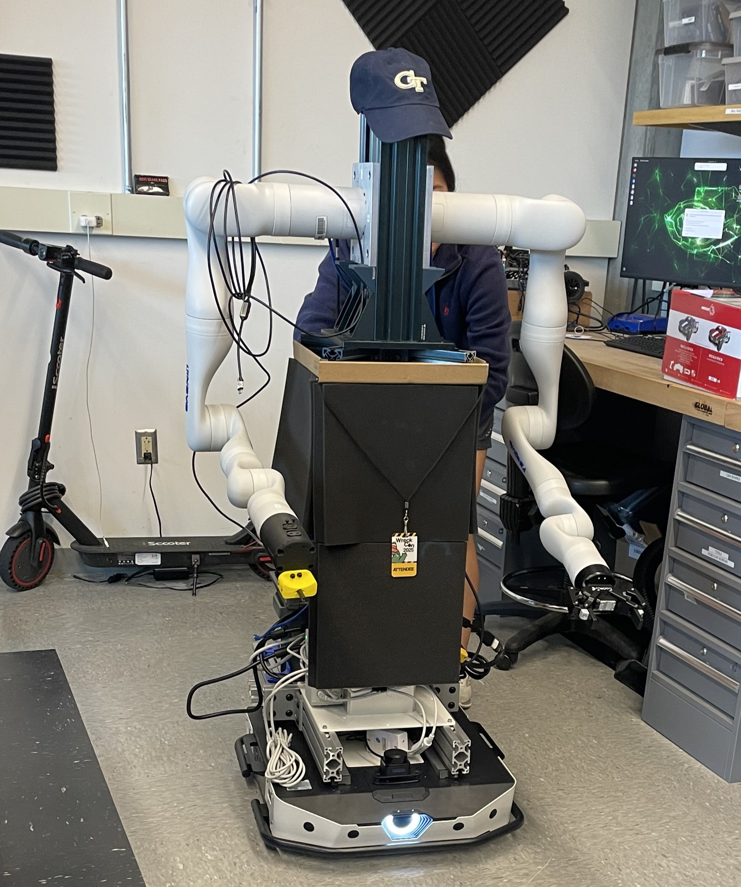
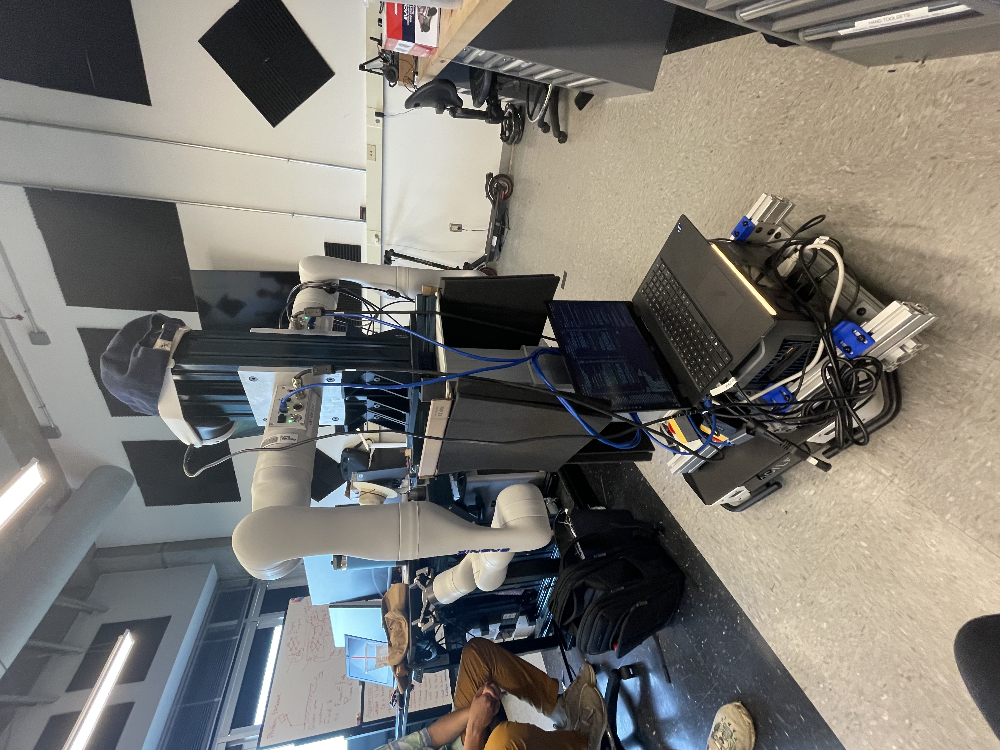
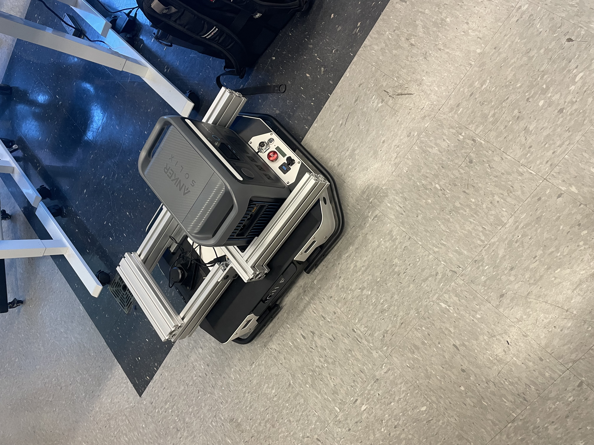

SAFE Robotics Lab
Role: Mobile Manipulator Platform Team | Organization: SAFE Robotics Lab, Georgia Tech
Duration: January 2025 — Present
Project Overview
Contributed to a mobile manipulator platform designed to move boxes and support autonomous manipulation research. My work focused on mechanical design and integration across the robot's mobile base, torso, and robotic arm systems.
System Architecture
- Platform: Mobile manipulator with robotic arm and mobile base
- Compute: NVIDIA Jetson hardware, Lidar, RGB camera
- Software: ROS and motion-planning software
- Task: Move boxes using coordinated mobile-base and manipulator motion
- Mechanical interfaces: Robotic-arm mounts and torso-to-base mounting interface
My Contributions
- Integrated mechanical, electrical, and software subsystems for the platform.
- Developed and validated ROS-based motion-planning algorithms.
- Designed and prototyped a 3D-printed rocker pedal for foot-based robot control.
- Designed mounting systems for robotic arms and contributed to mechanical integration of the platform.
- Designed a rocker-style pedal to provide foot-based robot control without a handheld controller.
- Manufactured the pedal prototype using 3D printing and iterated its resistance and range of motion.
Testing & Results
[Add platform testing, demonstrations, motion-planning results, or measurements from the robot integration work here.]
Skills & Tools
SolidWorks, ROS, NVIDIA Jetson Nano, mechanical design, robotic hardware integration, 3D printing, motion planning.
Gallery & Files


